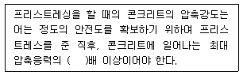
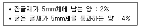
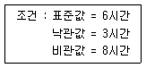
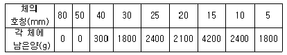
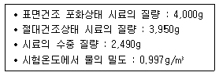
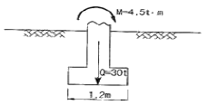
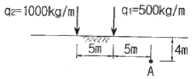
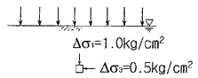
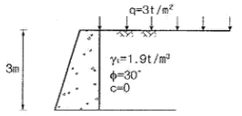
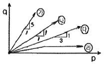

건설재료시험기사 (2018-03-04 기출문제)
1과목: 콘크리트공학
1. 콘크리트 타설시 유의사항으로 잘못된 것은?
- 콘크리트 타설 도중 블리딩 수가 있을 경우 그 물을 제거하고 그 위에 콘크리트를 친다.
- 외기온도가 25℃이하인 경우 허용이기치기 시간간격의 표준은 1.5시간을 표준으로 한다.
- 2층 이상으로 나누어 콘크리트를 타설하는 경우 아래층이 굳기 시작하기 전에 윗층의 콘크리트를 친다.
- 콘크리트의 자유낙하 높이가 너무 크면 콘크리트의 분리가 일어나므로 슈트, 펌프배관 등의 배출구와 타설면까지의 높이는 1.5m 이하를 원칙으로 한다.
(정답률: 71%)

2. 콘크리트의 휨 강도 시험에 대한 설명으로 틀린 것은?
- 지간은 공시체 높이의 3배로 한다.
- 재하 장치의 설치면과 공시체면과의 사이에 틈새가 생기는 경우 접촉부의 공시체 표면을 평평하게 갈아서 잘 접촉할 수 있도록 한다.
- 공시체에 하중을 가하는 속도는 가장자리 응력도의 증가율이 매초 0.6± 0.4 MPa이 되도록 한다.
- 공시체가 인장쪽 표면의 지간 방향 중심선의 3등분점의 바깥쪽에서 파괴된 경우는 그 시험 결과를 무효로 한다.
(정답률: 68%)
3. 콘크리트의 다지기에서 내부진동기를 사용하여 다짐하는 방법에 대한 설명으로 틀린 것은?
- 진동다지기를 할 때에는 내부진동기를 하층의 콘크리트 속으로 0.1m정도 찔러 넣는다.
- 1개소당 진동시간은 다짐할 때 시멘트 페이스트가 표면 상부로 약간 부상하기까지 한다.
- 내부진동기의 삽입간격은 일반적으로 1m 이상으로 하는 것이 좋다.
- 내부진동기는 콘크리트를 횡방향으로 이동시킬 목적으로 사용해서는 안 된다.
(정답률: 81%)
4. 숏크리트에 대한 설명으로 틀린 것은?
- 일반 숏크리트의 장기 설계기준압축강도는 재령 28일로 설정한다.
- 습식 숏크리트는 배치 후 60분 이내에 뿜어붙이기를 실시하여야 한다.
- 숏크리트의 초기강도는 재령 3시간에서 1.0~3.0 M P a을 표준으로한다 .
- 굵은 골재의 최대치수는 25mm의 것이 널리 쓰인다.
(정답률: 51%)
5. 프리스트레스트 콘크리트에 대한 설명으로 틀린 것은?
- 굵은 골재 최대치수는 보통의 경우 25mm를 표준으로 한다.
- 팽창성 그라우트의 재령 28일 압축강도는 최소 25MPa 이상이어야 한다.
- 프리텐션 방식에서는 프리스트레싱 할 때 콘크리트 압축강도가 30MPa 이상이어야 한다.
- 팽창성 그라우트의 팽창률은 0~10%를 표준으로 한다.
(정답률: 55%)
6. 한중 콘크리트에서 가열한 재료를 믹서에 투입하는 순서로 가장 적합한 것은?
- 굵은 골재 → 잔골재 → 시멘트 → 물
- 물 → 굵은 골재 → 잔골재 → 시멘트
- 잔골재 → 시멘트 → 굵은 골재 → 물
- 시멘트 → 잔골재 →굵은 골재 → 물
(정답률: 64%)
7. 콘크리트의 탄성계수에 대한 일반적인 설명으로 틀린 것은?
- 압축강도가 클수록 작다.
- 콘크리트의 탄성계수라 함은 할선탄성계수를 말한다.
- 응력-변형률 곡선에서 구할 수 있다.
- 콘크리트의 단위 용적 중량이 증가하면 탄성계수도 커진다.
(정답률: 62%)
8. 비파괴 시험방법 중 콘크리트 내의 철근부식 유무를 평가할 수 있는 방법이 아닌 것은?
- 자연 전위법
- 분극저항법
- 전기저항법
- 전자유도법
(정답률: 48%)
9. 프리스트레싱 할 때의 콘크리트 강도에 대한 아래 표의 설명에서 ( )안에 알맞은 수치는?

- 0.8
- 1.0
- 1.7
- 2.5
(정답률: 83%)
10. 서중 콘크리트에 대한 설명으로 틀린 것은?
- 하루 평균기온이 25℃를 초과하는 것이 예상되는 경우 서중 콘크리트로 시공하여야 한다.
- 서중 콘크리트의 배합온도는 낮게 관리하여야 한다.
- 콘크리트를 타설하기 전에는 지반, 거푸집 등 콘크리트로부터 물을 흡수할 우려가 있는 부분을 습윤상태로 유지하여야 한다.
- 콘크리트를 타설할 때의 콘크리트 온도는 25℃ 이하이어야 한다.
(정답률: 66%)
11. 콘크리트의 받아들이기 품질검사 항목 중 염소이온량 시험의 시기 및 횟수에 대한 규정으로 옳은 것은?
- 바다 잔골재를 사용할 경우 2회/일, 그 밖의 경우 1회/주
- 바다 잔골재를 사용할 경우 1회/일, 그 밖의 경우 2회/주
- 바다 잔골재를 사용할 경우 2회/일, 그 밖의 경우 2회/주
- 바다 잔골재를 사용할 경우 1회/일, 그 밖의 경우 1회/주
(정답률: 73%)
12. 레디믹스트 콘크리트에서 구입자의 승인을 얻은 경우를 제외한 일반적인 경우의 염화물 함유량은 최대 얼마 이하이어야 하는가? (단, 염소 이온(CI‾)량)
- 0.2 ㎏/m3
- 0.3 ㎏/m3
- 0.4 ㎏/m3
- 0.5 ㎏/m3
(정답률: 72%)
13. 콘크리트의 압축강도 특성에 대한 설명으로 틀린 것은?
- 시멘트의 분말도가 높아지면 초기압축강도는 커진다.
- 물-시멘트비가 일정하면 굵은 골재의 최대치수가 클수록 콘크리트의 강도는 작아진다.
- 일반적으로 부순돌을 사용한 콘크리트의 강도는 강자갈을 사용한 콘크리트의 강도보다 작다.
- 콘크리트의 강도는 일반적으로 표준양생을 한 재령 28일 압축강도를 기준으로 하고 댐콘크리트의 경우는 재령 91일 압축강도를 기준으로 한다.
(정답률: 62%)
14. 묽은 비빔 콘크리트는 블리딩이 크고 이것에 상당하는 침하가 발생한다. 콘크리트의 침하가 철근 및 기타 매설물에 의해 국부적인 방해를 받아 발생하는 침하균열을 방지하기 위한 대책으로 틀린 것은?
- 단위수량을 될 수 있는 한 적게 하고, 슬럼프가 작은 콘크리트를 잘 다짐해서 시공한다.
- 침하종료 이전에 급격하게 굳어져 점착력을 잃지 않는 시멘트나 혼화제를 선정한다.
- 타설 속도를 가능한 빨리하고, 1회의 타설 높이를 크게 한다.
- 균열을 조기에 발견하고, 각재 등으로 두드리는 재타법(再打法)이나 흙손으로 눌러서 균열을 폐색시킨다.
(정답률: 70%)
15. 시방배합결과 단위 잔골재량 670㎏/m3, 단위 굵은 골재량 1,280㎏/m3을 얻었다. 현장 골재의 입도만을 고려하여 현장배합으로 수정하면 단위 굵은 골재량은?

- 1,286 ㎏/m3
- 1,297 ㎏/m3
- 1,312 ㎏/m3
- 1,320 ㎏/m3
(정답률: 51%)
16. 섬유보강콘크리트용 섬유로서 갖추어야 할 조건으로 잘못된 것은?
- 섬유의 탄성계수는 시멘트 결합재 탄성계수의 1/4 이하일 것
- 섬유와 시멘트 결합재 사이의 부착성이 좋을 것
- 섬유의 인장강도가 충분히 클 것
- 형상비가 50 이상일 것
(정답률: 66%)
17. 거푸집 및 동바리의 구조계산에 관한 설명으로 틀린 것은?
- 고정하중은 철근콘크리트와 거푸집의 중량을 고려하여 합한 하중이며, 철근의 중량을 포함한 콘크리트의 단위중량은 보통콘크리트에서는 24kN/m3을 적용하고, 거푸집 하중은 최소 0.4kN/m3 이상을 적용한다.
- 활하중은 작업원, 경량의 장비 하중, 기타 콘크리트 타설에 필요한 자재 및 공구 등의 시공 하중, 그리고 충격하중을 포함한다.
- 동바리에 작용하는 수평방향 하중으로는 고정하중의 2% 이상 또는 동바리 상단의 수평 방향 단위 길이당 1.5kN/m3 이상 중에서 큰 쪽의 하중이 동바리 머리 부분에 수평방향으로 작용하는 것으로 가정한다.
- 벽체 거푸집의 경우에는 거푸집 측면에 대하여 5.0kN/m3 이상의 수평방향 하중이 작용하는 것으로 본다.
(정답률: 50%)
18. 콘크리트의 습윤양생에 대한 설명으로 틀린 것은?
- 습윤양생기간 중에 거푸집판이 건조하더라도 살수를 해서는 안 된다.
- 콘크리트는 타설한 후 경화가 될 때까지 양생기간 동안 직사광선이나 바람에 의해 수분이 증발하지 않도록 보호하여야 한다.
- 습윤양생에서 습윤상태의 보호기간은 보통포틀랜드 시멘트를 사용하고 일평균기온이 15℃이상인 경우에 5일간 이상을 표준으로 한다.
- 막양생을 할 경우에는 사용 전에 살포량, 시공방법 등에 관하여 시험을 통하여 충분히 검토해야 한다.
(정답률: 76%)
19. 프리플레이스트 콘크리트에 사용하는 재료에 대한 설명으로 틀린 것은?
- 프리플레이스트 콘크리트의 주입 모르타르는 포틀랜드 시멘트를 사용하는 것을 표준으로 한다.
- 잔골재의 조립률은 2.3~3.1 범위로 한다.
- 굵은 골재의 최소 치수는 15mm 이상으로 하여야 한다.
- 일반적으로 굵은 골재의 최대 치수는 최소 치수의 2~4배 정도로 한다.
(정답률: 52%)
20. 30회 이상의 시험실적으로부터 구한 콘크리트 압축강도의 표준편차가 4.5MPa이고, 설계기준 압축강도가 40MPa인 경우 배합강도는?
- 46.1MPa
- 46.5MPa
- 47.0MPa
- 48.5MPa
(정답률: 63%)
2과목: 건설시공 및 관리
21. 다음은 PERT/CPM 공정관리 기법의 공기 단축 요령에 관한 설명이다. 옳지 않은 것은?
- 비용경사가 최소인 주공정부터 공기를 단축한다.
- 주공정선(C.P)상의 공정을 우선 단축한다.
- 전체의 모든 활동이 주공정선(C.P)화 되면 공기 단축은 절대 불가능하다.
- 공기 단축에 따라 주공정선(C.P)이 복수화 될 수 있다.
(정답률: 72%)
22. 토적곡선(mass curve)의 성질에 대한 설명 중 옳지 않은 것은?
- 토적곡선이 기선 위에서 끝나면 토량이 부족하고, 반대이면 남는 것을 뜻한다.
- 곡선의 지점은 성토에서 절토로의 변이점이다.
- 동일단면 내에서 횡방향 유용토는 제외되었으므로 동일단면내의 절토량과 성토량을 구할 수 없다.
- 교량 등의 토공이 없는 곳에는 기선에 평행한 직선으로 표시한다.
(정답률: 70%)
23. 자연 함수비 8%인 흙으로 성토하고자 한다. 다짐한 흙의 함수비를 15%로 관리하도록 규정하였을 때 매층마다 1m2당 몇 ㎏의 물을 살수해야 하는가? (단, 1층의 다짐 후 두께는 20㎝이고, 토량 변화율 C=0.8 이며, 원지반상태에서 흙의 단위중량은 1.8t/m3이다.)
- 21.59㎏
- 24.38㎏
- 27.23㎏
- 29.17㎏
(정답률: 35%)
24. 아래의 주어진 조건을 이용하여 3점시간법을 적용하여 activity time을 결정하면?

- 4.3시간
- 5.2시간
- 5.8시간
- 6.8시간
(정답률: 68%)
25. 교대에서 날개벽(Wing)의 역할로 가장 적당한 것은?
- 배면(背面)토사를 보호하고 교대 부근의 세굴을 방지한다.
- 교대의 하중을 부담한다.
- 유량을 경감하여 토사의 퇴적을 촉진시킨다.
- 교량의 상부구조를 지지한다.
(정답률: 77%)
26. Bulldozer의 시간당 작업량은 다음 중 무엇에 반비례하는가?
- 1회 토공량(q)
- 토량환산계수(f)
- 싸이클타임(Cm)
- 작업효율(E)
(정답률: 74%)
27. 다음 중 포장 두게를 결정하기 위한 시험이 아닌 것은? (문제 오류로 실제 시험에서는 모두 정답처리 되었습니다. 여기서는 1번을 누르면 정답 처리 됩니다.)
- CBR 시험
- 평판재하시험
- 마샬시험
- 3축압축시험
(정답률: 60%)
28. 지중연속벽 공법에 대한 설명으로 틀린 것은?
- 주변 지반의 침하를 방지할 수 있다.
- 시공 시 소음, 진동이 크다.
- 벽체의 강성이 높고 지수성이 좋다.
- 큰 지지력을 얻을 수 있다.
(정답률: 67%)
29. 사이폰 관거(syphon drain)에 대한 다음 설명 중 옳지 않은 것은?
- 암거가 앞뒤의 수로바닥에 비하여 대단히 낮은 위치에 축조된다.
- 일종의 집수암거로 주로 하천의 복류수를 이용하기 위하여 쓰인다.
- 용수, 배수, 운하 등 성질이 다른 수로가 교차하지만 합류시킬 수 없을 때 사용한다.
- 다른 수로 혹은 노선과 교차할 때 사용된다.
(정답률: 49%)
30. 아스팔트포장 표면에 발생하는 소성변형(Rutting)에 대한 설명으로 틀린 것은?
- 침입도가 큰 아스팔트를 사용하거나 골재의 최대 치수가 큰 경우에 발생하기 쉽다.
- 종방향 평탄성에는 심각하게 영향을 주지는 않지만 물이 고인다면 수막현상을 일으켜 주행 안전성에 심각한 영향을 줄 수 있다.
- 하절기의 이상 고온 및 아스콘에 아스팔트량이 많은 경우 발생하기 쉽다.
- 외기온이 높고 중차량이 많은 저속구간 도로에서 주로 발생하고, 교량구간은 토공구간에 비해 적게 발생한다.
(정답률: 52%)
31. 사질토를 절토하여 45,000m3의 성토구간을 다짐 성토하려고 한다. 사질토의 토량 변화율이 L=1.2, C=0.9일 때 운반토량은?
- 48,600m3
- 50,000m3
- 54,000m3
- 60,000m3
(정답률: 70%)
32. 3.5㎞ 거리에서 20,000m3의 자갈을 4m3 덤프트럭으로 운반할 경우 1일 1대의 덤프트럭 이 운반할 수 있는 양은? (단, 작업시간은 1일 8시간이고, 상·하차 시간 2분, 평균속도 30㎞/hr 로 한다.)
- 100m3
- 120m3
- 140m3
- 160m3
(정답률: 40%)
33. 점성토를 다짐하는 기계로서 다음 중 가장 부적합한 것은?
- Tamping roller
- Tire roller
- Grid roller
- 진동 roller
(정답률: 59%)
34. 다음 중 비계를 이용하지 않는 강트러스교의 가설공법이 아닌 것은?
- 새들(saddle) 공법
- 캔틸레버(cantiever)
- 케이블(cable)식 공법
- 부선(pontoon)식 공법
(정답률: 59%)
35. 뉴매틱 케이슨 기초의 일반적인 특징에 대한 설명으로 틀린 것은?
- 지하수를 저하시키지 않으며, 히빙, 보일링을 방지할 수 있으므로 인접 구조물의 침하 우려가 없다.
- 오픈 케이슨보다 침하공정이 빠르고 장애물 제거가 쉽다.
- 지형 및 용도에 따른 다양한 형상에 대응할 수 있다.
- 소음과 진동이 없어 도심지 공사에 적합하다.
(정답률: 56%)
36. 기초의 굴착에 있어서 주변부를 굴착축조하고 그 후 남아 있는 중앙부를 굴착하는 방법은?
- island 공법
- trench cut 공법
- open cut 공법
- top down 공법
(정답률: 52%)
37. 터널굴착공법인 TBM공법의 특징에 대한 설명으로 틀린 것은?
- 터널 단면에 대한 분할 굴착시공을 하므로, 지질변화에 대한 확인이 가능하다.
- 기계굴착으로 인해 여굴이 거의 발생하지 않는다.
- 1㎞ 이하의 비교적 짧은 터널의 시공에는 비경제적인 공법이다.
- 본 바닥 변화에 대하여 적응이 곤란하다.
(정답률: 60%)
38. 항만공사에서 간만의 차가 큰 장소에 축조되는 항은?
- 하구항(coastal harbor)
- 개구항(open harbor)
- 폐구항(closed harbor)
- 피난항(refuge harbor)
(정답률: 69%)
39. 특수터널 공법 중 침매공법에 대한 설명으로 틀린 것은?
- 육상에서 제작하므로 신뢰성이 높은 터널 본체를 만들 수 있다.
- 단면의 형상이 비교적 자유롭다.
- 협소한 장소의 수로에 적당하다.
- 수정에 설치하므로 자중이 적고 연약지반 위에도 쉽게 시공할 수 있다.
(정답률: 50%)
40. 케이슨을 침하시킬 때 유의사항으로 틀린 것은?
- 침하시 초기 3m까지는 안정하므로 경사이동의 조정이 용이하다.
- 케이슨은 정확한 위치의 확보가 중요하다.
- 토질에 따라 케이슨의 낙하 속도가 다르므로 사전 조사가 중요하다.
- 편심이 생기지 않도록 주의해야 한다.
(정답률: 72%)
3과목: 건설재료 및 시험
41. 염화칼슘(CaCl2)을 응결 경화 촉진제로 사용한 경우 다음 설명 중 틀린 것은?
- 염화칼슘은 대표적인 응결 경화 촉진제이며, 4% 이상 사용하여야 순결(瞬結)을 방지하고, 장기강도를 증진시킬 수 있다.
- 한중 콘크리트에 사용하면 조기발열의 증가로 동결온도를 낮출 수 있다.
- 염화칼슘을 사용한 콘크리트는 황산염에 대한 화학저항성이 적기 때문에 주의할 필요가 있다.
- 응결이 촉진되므로 운반, 타설, 다지기 작업을 신속히 해야 한다.
(정답률: 56%)
42. 양질의 포졸란을 사용한 콘크리트의 일반적인 특징으로 보기 어려운 것은?
- 워커빌리티가 향상된다.
- 블리딩 현상이 감소한다.
- 발열량이 적어지므로 단면이 큰 콘크리트에 적합하다.
- 초기강도는 크나 장기강도가 작아진다.
(정답률: 76%)
43. 석재를 사용할 경우 고려해야 할 사항으로 옳지 않은 것은?
- 석재를 다량으로 사용 시 안정적으로 공급할 수 있는지 여부를 조사한다.
- 외벽이나 콘크리트 포장용 석재에는 가급적이면 연석은 피하는 것이 좋다.
- 내화구조물에는 석재를 사용할 수 없다.
- 휨응력과 인장응력을 받는 곳은 가급적이면 사용하지 않는 것이 좋다.
(정답률: 65%)
44. 다음 석재 중 조직이 균질하고 내구성 및 강도가 큰 편이며, 외관이 아름다운 장점이 있는 반면 내화성이 작아 고열을 받는 곳에는 적합하지 않은 것은?
- 화강암
- 응회암
- 현무암
- 안산암
(정답률: 78%)
45. 콘크리트용으로 사용하는 부순 굵은 골재의 품질 기준에 대한 설명으로 틀린 것은?
- 절대건조밀도는 2.5g/cm3 이상이어야 한다.
- 흡수율은 5.0% 이하이어야 한다.
- 마모율은 40% 이하이어야 한다.
- 입형판정실적률은 55% 이상이어야 한다.
(정답률: 57%)
46. 아스팔트에 대한 설명 중 잘못된 것은?
- 레이크아스팔트는 지표의 낮은 부분에 퇴적물로 생긴다.
- 아스팔타이트는 원유를 인공적으로 증류하여 제조한 것이다.
- 샌드아스팔트는 천연 아스팔트가 모래 속에 스며든 것이다.
- 록아스팔트는 천연 아스팔트가 석회암, 사암 등의 다공질 암석 사이에 스며든 것이다.
(정답률: 63%)
47. 발화점이 295℃ 정도이며, 충격에 둔감하고, 폭발위력이 Dynamite보다 우수하며, 흑색 화약의 4배에 달하는 폭약은 어느 것인가?
- TNT
- 니트로 글리세린
- Slurry
- 칼릿(Carlit)
(정답률: 65%)
48. 아스팔트 시료를 일정비율 가열하여 강구의 무게에 의해 시료가 25.4mm 내려갔을 때 온도를 측정한다. 이는 무엇을 구하기 위한 시험인가?
- 침입도
- 인화점
- 연소점
- 연화점
(정답률: 75%)
49. 목재에 관한 다음 설명 중 옳지 않은 것은?
- 제재후의 심재는 변재보다 썩기 쉽다.
- 벌목 시기는 가을에서 겨울에 걸친 기간이 가장 적당하다.
- 목재는 세포막 중에 스며든 결합수가 감소하면 수축 변형한다.
- 목재의 강도는 절대 건조일 때 최대가 된다.
(정답률: 63%)
50. 시멘트의 비중을 측정하기 위하여 르샤틀리에 비중병에 0.8cc 눈금까지 등유를 주입하고 시멘트 64g을 가하여 눈금이 21.3cc로 증가 되었다. 이 시멘트의 비중은?
- 3.08
- 3.12
- 3.15
- 3.18
(정답률: 54%)
51. 다음 토목섬유 중 폴리머를 판상으로 압축시키면서 격자 모양의 형태로 구멍을 내어 만든 후 여러 가지 모양으로 늘린 것으로 연약지반 처리 및 지반 보강용으로 사용되는 것은?
- 지오텍스타일(geotextile)
- 지오그리드(geogrids)
- 지오네트(geonets)
- 웨빙(webbings)
(정답률: 67%)
52. 전체 15㎏의 굵은 골재로 체가름 시험을 한 결과가 아래의 표와 같을 때 조립률은?

- 3.5
- 6.47
- 7.34
- 8.5
(정답률: 51%)
53. 콘크리트용 화학혼화제의 풀질시험 항목이 아닌 것은?
- 침입도 지수(PI)
- 감수율(%)
- 응결시간의 차(mim)
- 압축강도비(%)
(정답률: 58%)
54. 강(강)의 화학성분 중에서 취성을 증가시키는 가장 큰 요소는?
- 규소(Si)
- 탄소(C)
- 인(P)
- 크롬(Cr)
(정답률: 54%)
55. 목재의 강도에 대하여 바르게 설명한 것은?
- 일반적으로 휨 강도는 압축강도보다 작다.
- 일반적으로 섬유에 평행방향의 인장강도는 압축강도보다 크다.
- 일반적으로 섬유의 평행방향의 압축강도는 섬유에 직각 방향의 압축강도보다 작다.
- 일반적으로 전단강도는 휨 강도보다 크다.
(정답률: 60%)
56. 풍화한 시멘트의 성질에 대한 설명으로 틀린 것은?
- 비중이 떨어진다.
- 강도의 발현이 저하된다.
- 응결이 지연된다.
- 강열감량이 저하된다.
(정답률: 59%)
57. 콘크리트용 잔골재의 안정성에 대한 설명으로 옳은 것은?
- 잔골재의 안정성은 수산화나트륨으로 5회 시험으로 평가하며, 그 손실질량은 10% 이하를 표준으로 한다.
- 잔골재의 안정성은 수산화나트륨으로 3회 시험으로 평가하며, 그 손실질량은 5% 이하를 표준으로 한다.
- 잔골재의 안정성은 황산나트륨으로 5회 시험으로 평가하며, 그 손실질량은 10% 이하를 표준으로 한다.
- 잔골재의 안정성은 황산나트륨으로 3회 시험으로 평가하며, 그 손실질량은 5% 이하를 표준으로 한다.
(정답률: 56%)
58. 도로포장용 스트레이트 아스팔트 재료의 품질검사에 필요한 시험 항목이 아닌 것은?
- 증류시험
- 침입도 시험
- 톨루엔 가용분
- 박막가열 시험
(정답률: 39%)
59. 굵은 골재의 밀도시험 결과가 아래의 표와 같을 때 이 골재의 표면건조 포화상태의 밀도는?

- 2.57g/m3
- 2.61g/m3
- 2.64g/m3
- 2.70g/m3
(정답률: 44%)
60. 알루미나 시멘트의 특성에 대한 설명으로 틀린 것은?
- 포틀랜드시멘트에 비해 강도발현이 매우 빠르다.
- 내화성이 약하므로 내화물용으로는 부적합하다.
- 산, 염류, 해수 등의 화학적 침식에 대한 저항성이 크다.
- 발열량이 크기 때문에 긴급을 요하는 공사나 한중공사의 시공에 적합하다.
(정답률: 55%)
4과목: 토질 및 기초
61. 어떤 흙에 대해서 일축압축시험을 한 결과 일축압축 강도가 1.0kg/cm2이고 이 시료의 파괴면과 수평면이 이루는 각이 50°일 때 이 흙의 점착력(Cu)과 내부 마찰각(ø)은?
- Cu = 0.60 kg/cm2, ø = 10°
- Cu = 0.42 kg/cm2, ø = 50°
- Cu = 0.60 kg/cm2, ø = 50°
- Cu = 0.42 kg/cm2, ø = 10°
(정답률: 37%)
62. 어떤 점토의 압밀계수는 1.92×10-3cm2/sec, 압축계수는 2.86×10-2cm2/g이었다. 이 점토의 투수계수는? (단, 이 점토의 초기간극비는 0.8이다.)
- 1.⑤×10-5cm2/sec
- 2.⑤.×10-5cm2/sec
- 3.⑤×10-5cm2/sec
- 4.⑤×10-5cm2/sec
(정답률: 39%)
63. 아래 그림과 같은 폭(B) 1.2m, 길이(L) 1.5m인 사각형 얕은 기초에 폭(B) 방향에 대한 편심이 작용하는 경우 지반에 작용하는 최대압축응력은?

- 29.2t/m2
- 38.5t/m2
- 39.7t/m2
- 41.5t/m2
(정답률: 37%)
64. 반무한 지반의 지표상에 무한길이의 선하중 q1, q2가 다음의 그림과 같이 작용할 때 A점에서의 연직응력 증가는?

- 3.03㎏/m2
- 12.12㎏/m2
- 15.15㎏/m2
- 18.18㎏/m2
(정답률: 41%)
65. 표준관입 시험에서 N치가 20으로 측정되는 모래 지반에 대한 설명으로 옳은 것은?
- 내부마찰각이 약 30°~40° 정도인 모래이다.
- 유효상재 하중이 20t/m2인 모래이다.
- 간극비가 1.2인 모래이다.
- 매우 느슨한 상태이다.
(정답률: 48%)
66. 다음 중 투수계수를 좌우하는 요인이 아닌 것은?
- 토립자의 비중
- 토립자의 크기
- 포화도
- 간극의 형상과 배열
(정답률: 37%)
67. 흙 시료의 전단파괴면을 미리 정해놓고 흙의 강도를 구하는 시험은?
- 직접전단시험
- 평판재하시험
- 일축압축시험
- 삼축압축시험
(정답률: 46%)
68. 깊은 기초의 지지력 평가에 관한 설명으로 틀린 것은?
- 현장 타설 콘크리트 말뚝 기초는 동역학적 방법으로 지지력을 추정한다.
- 말뚝 항타분석기(PDA)는 말뚝의 응력분포, 경시 효과 및 해머 효율을 파악할 수 있다.
- 정역학적 지지력 추정방법은 논리적으로 타당하나 강도정수를 추정하는데 한계성을 내포하고 있다.
- 동역학적 방법은 항타장비, 말뚝과 지반조건이 고려된 방법으로 해머 효율의 측정이 필요하다.
(정답률: 47%)
69. 유선망(Flow Net)의 성질에 대한 설명으로 틀린 것은?
- 유선과 등수두선은 직교한다.
- 동수경사(ｉ)는 등수두선의 폭에 비례한다.
- 유선망으로 되는 사각형은 이론상 정사각형이다.
- 인접한 두 유선 사이, 즉 유로를 흐르는 침투수량은 동일하다.
(정답률: 50%)
70. 포화된 지반의 간극비를 ℯ, 함수비를 ⍵, 간극비률을 n, 비중을 Gs라 할 때 다음 중 한계 동수경사를 나타내는 식으로 적절한 것은?
- Gs+1/1+e
- w-ω/ω(1+e)
- (1+n)(Gs-1)
- Gs(1-ω+e)/(1+Gs)(1+e)
(정답률: 46%)
71. 흙의 다짐시험에서 다짐에너지를 증가시킬 때 일어나는 결과는?
- 최적함수비는 증가하고, 최대건조 단위중량은 감소한다.
- 최적함수비는 감소하고, 최대건조 단위중량은 증가한다.
- 최적함수비와 최대건조 단위중량이 모두 감소한다.
- 최적함수비와 최대건조 단위중량이 모두 증가한다.
(정답률: 61%)
72. Terzaghi의 국한지지력 공식에 대한 설명으로 틀린 것은?
- 기초의 형상에 따라 형상계수를 고려하고 있다.
- 지지력계수 Nc, Nq, Nr는 내부마찰각에 의해 결정된다.
- 점성토에서의 극한지지력은 기초의 근입 깊이가 깊어지면 증가된다.
- 극한지지력은 기초의 폭에 관계없이 기초 하부의 흙에 의해 결정된다.
(정답률: 49%)
73. 크기가 30㎝×30㎝의 평판을 이용하여 사질토위에서 평판재하시험을 실시하고 극한 지지력 20t/m2를 얻었다. 크기가 1.8m×1.8m인 정사각형기초의 총 허용하중은 약 얼마인가? (단, 안전율 3을 사용)
- 22ton
- 66ton
- 130ton
- 150ton
(정답률: 51%)
74. 그림과 같은 지반에서 하중으로 인하여 수직응력(△σ1)이 1.0㎏/cm2 증가되고 수평응력 (△σ3)이 0.5㎏/cm2 증가되었다면 간극수압은 얼마나 증가되었는가? (단, 간극수압계수 A = 0.5 이고 B = 1 이다)

- 0.5㎏/cm2
- 0.75㎏/cm2
- 1.00㎏/cm2
- 1.25㎏/cm2
(정답률: 41%)
75. 그림과 같이 옹벽 배변의 지표면에 등분포 하중이 작용할 때, 옹벽에 작용하는 전체 주 동토압의 합력(Pa)과 옹벽 저면으로부터 합력의 작용점까지의 높이(h)는?

- Pa=2.85t/m, h=1.26m
- Pa=2.85t/m, h=1.38m
- Pa=5.85t/m, h=1.26m
- Pa=5.85t/m, h=1.38m
(정답률: 34%)
76. 다음 중 부마찰이 발생할 수 있는 경우가 아닌 것은?
- 매립된 생활쓰레기 중에 시공된 관측정
- 붕적토에 시공된 말뚝 기초
- 성토한 연약점토지반에 시공된 말뚝 기초
- 다짐된 사질지반에 시공된 말뚝 기초
(정답률: 51%)
77. 피조콘(piezocone) 시험의 목적이 아닌 것은?
- 지층의 연속적인 조사를 통하여 지층 분류 및 지층 변화 분석
- 연속적인 원지반 전단강도의 추이 분석
- 중간 점토 내 분포한 sand seam 유무 및 발달 정도 확인
- 불교란 시료 채취
(정답률: 60%)
78. ϒ°= 2.0 t/m3인 사질토가 20°로 경사진 무한사면이 있다. 지하수위가 지표면과 일치하는 경우 이 사면의 안전율이 1 이상이 되기 위해서는 흙의 내부마찰각이 최소 몇 도 이상이어야 하는가?
- 18.21°
- 20.52°
- 36.06 °
- 45.47°
(정답률: 44%)
79. 4.75mm체(4번 체) 통과율이 90%이고, 0.075mm체(200번 체) 통과율이 4%, D10=0.25mm, D30= 0.6mm, D60= 2mm인 흙을 통일분류법으로 분류하면?
- GW
- GP
- SW
- SP
(정답률: 47%)
80. 아래 그림에서 토압계수 K=0.5일 때의 응력경로는 어느 것인가?

- ㉮
- ㉯
- ㉰
- ㉱
(정답률: 51%)